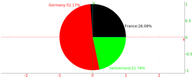
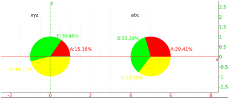

8.1.14 Pie charts: camembert
You can draw pie charts using the same structure as bar graphs, but
with the command camembert. If you enter
camembert([["France", 6],["Germany", 12], ["Switzerland", 5]])
you will get

and if you enter
camembert([[2,"xyz","abc"],["A",2,5],["B",5,6],["C",6,6]])
you will get
